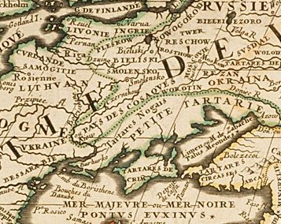

13世紀，蒙古人佔領烏克蘭大部分地區，但蓋瑞西亞和沃倫公國卻沒有被蒙古人統治，這兩個公國位於古羅斯的西南邊境地區，「烏克蘭」一詞的起源並不清楚，當它開始使用時人們認為「Україна」（烏克蘭）是烏克蘭語中兩個單詞的組合：「У：我們或在本地」和「Kраїна：國家/邊界區」，可以解釋為「我們的國家或祖國」。
該地方的羅斯人就被稱為「烏克蘭人」、「烏克拉伊娜」，即「邊界上的人」，國名是以民族名稱命名。
法國製圖師紀堯姆·萊維塞爾·德·博普蘭1639年被招募參與重建聶伯河的可達克要塞，同年他繪製了首幅「具描述性質」的烏克蘭地圖，當時即是指波蘭立陶宛聯邦的草原邊境，在後來其也繪製出大量烏克蘭地圖，令「烏克蘭」這個詞在17世紀下半葉開始在歐洲製圖師中普及。

東歐地圖（1690年）「VKRAINE ou PAYS DES COSAQUES」（烏克蘭或哥薩克國）
Okraina - 基輔羅斯分地區，Ukraina - 國